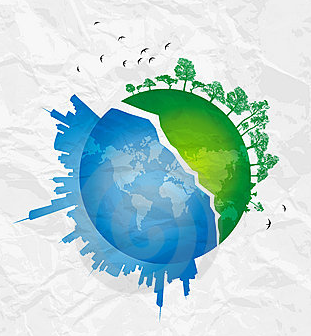

BH60A7201 Kiertotalous.nyt 循环经济 · 第 03 / 03 讲
第 3 讲 · 循环经济核心概念导读（背景拓展）
Core Concepts of the Circular Economy: Background Orientation
所属章节：第 2 章 循环经济概念导读
资料来源 · 2 项 / 已附 0 项
Maa.png未附原文件3_Tasks/2_Written compilation/intro/intro.html未附原文件
未附文件仅列原始名称；版本与核对日期由维护者登记。
本节定位
这一讲的位置很特殊：它是「补课」，不是「讲课」。源文本只给了登录说明与写作任务说明，没有提供任何概念章节，也没有主题清单。因此本讲的全部概念内容都属于背景拓展，作用有两个——帮你读懂 MOOC 材料里的术语，帮你在 essay 第一问里把概念分组、在第二问里把概念落到生活。
必须先把边界说清：本讲不是课程材料，不能当作课程结论引用，也不能替代 MOOC 的主题内容。凡是本讲与 MOOC 材料冲突的地方，以 MOOC 材料为准；凡是本讲提到而 MOOC 没提的概念，写进 essay 时要么不用，要么说明它是你自己的背景理解。
本讲唯一与源文件直接相关的内容，是写作任务对「覆盖所有主题」与「日常生活中的循环经济思维」这两项要求——它们规定了概念导读该往哪个方向准备。
学完本讲你应当能够：
- 用一句话区分线性经济与循环经济的默认假设
- 用生命周期思维判断一个「更环保」的结论是否站得住
- 按废弃物层级与 R 框架排出处理方式的优先顺序
- 说明产品服务化、再制造、逆向物流为何改变企业激励
- 识别「回收率等于循环度」「循环必然更环保」这两类常见误判
- 把概念按「物质流、时间尺度、层级、组织方式、系统」五组归类，用于 essay 提纲
3.1 阅读前提：本讲全部为背景拓展
为什么要专门标出来：这门课对来源纪律要求极严——只写基于课程材料的原创想法，避免课外来源。如果误把本讲的概念当成课程内容写进 essay，虽然不算抄袭（本讲不是可引用的出版物），但会造成「写了课程没讲的东西」，与 focus on the MOOC material 的要求相悖。
正确用法是：用本讲建立框架，用 MOOC 材料填充内容。框架帮你判断「这个概念属于哪一类」，内容必须来自课程。
3.2 从线性到闭环：两种默认假设
线性经济（linear economy）的默认句式是「开采—制造—丢弃」（take-make-dispose）。它背后有三个隐含假设：资源近似无限、废弃物的处置成本近似为零、产品寿命越短越有利于销售。这三个假设在工业化的前两百年基本成立，因此线性模式不是「愚蠢」，而是「当时理性的」。
循环经济（circular economy）把这个句式改成闭环：材料在产品报废后仍回到生产系统，价值被反复保留。它的隐含假设正好相反：材料是资产而不是消耗品，废弃物是设计阶段的失误（waste is a design flaw），产品的寿命是资产而不是负债。
| 维度 | 线性经济 | 循环经济 |
|---|---|---|
| 物质流向 | 单向：原料 → 产品 → 废弃物 | 闭环：材料反复回到生产 |
| 价值实现 | 在销售瞬间一次性实现 | 通过维护、再用、再制造多次实现 |
| 设计目标 | 降低成本、加快周转 | 延长寿命、便于拆解与回收 |
| 废弃物地位 | 末端问题，交给处置系统 | 设计阶段就要消除 |
| 企业收益 | 卖得越多越好 | 产品越耐用越省成本 |
这张表的关键不在「谁更好」，而在最后一行：循环经济改变的是激励结构，不只是道德态度。当企业靠「卖使用」而不是「卖产品」赚钱时，耐用与可修才符合它的利益——这一点在第 3.6 节展开。
3.3 生命周期思维：先把边界画对
生命周期思维（life-cycle thinking）要求在判断一个产品「环不环保」时，把原料获取、生产、运输、使用、报废整条链条都算进去，而不是只看某一个环节。它是一条方法论要求，不是一个结论。
为什么必须这样：单点最优常常造成整体更差。典型例子是容器替换——把塑料瓶换成玻璃瓶看起来减少了塑料，但如果玻璃瓶更重、运输距离更长，运输阶段的能耗与排放可能抵消甚至超过收益。谁对谁错取决于具体数据与边界，而「取决于」正是重点。
操作含义有两条。第一，任何「更环保」的结论都要附带边界说明（system boundary）：你比较的是哪几段、有没有算运输、有没有算使用阶段的能耗。第二，比较要在同一功能单位（functional unit）下做：一升饮料、一次洗涤、一年的供暖，而不是「一个瓶子对另一个瓶子」。
3.4 废弃物层级：先预防，再回收
政策与产业实践里常用一个层级（waste hierarchy）来排序处理方式：预防产生 > 再使用 > 回收材料 > 回收能量 > 安全处置。顺序的含义是「越靠上越优先」，因为越靠上保留的价值越多、额外投入的能源越少。
回收虽然常被当作循环经济的代名词，但它在层级里排在预防与再用之后。原因很实际：回收要破碎、清洗、再熔融，每一步都消耗能源，且材料常常降级（downcycling，例如混纺纤维再生成低强度纤维）。因此「多回收」是末端改善，「少产生」才是源头改善。
3.5 R 框架：一组动词，不是一组口号
R 框架（R-framework）把循环策略写成一串动词，按「保留价值的多少」排序。常见版本如下，不同文献的 R 数量不同，因为对中间环节的切分粗细不同。
| 层级 | 英文 | 含义 | 价值保留 |
|---|---|---|---|
| R1 | refuse / reduce | 不产生：拒绝不必要的东西，减少用量 | 最高 |
| R2 | reuse | 再用：原功能继续使用 | 高 |
| R3 | repair | 维修：恢复功能 | 高 |
| R4 | refurbish / remanufacture | 翻新／再制造：恢复到可用或接近新品 | 中高 |
| R5 | repurpose | 改用途：换一种功能继续用 | 中 |
| R6 | recycle | 回收：把材料打碎重造成原料 | 低 |
| R7 | recover | 能量回收：焚烧取能 | 最低 |
背数字没有意义，理解排序才有意义：从 R1 到 R7，每往下一步，就需要多投入一道加工，能保住的原有劳动与材料组织方式就少一层。维修一台洗衣机保住的是整机的结构与装配劳动；回收它的钢板只保住了金属的原料价值。
这个排序也解释了为什么「以旧换新」不一定是循环：如果旧产品被直接破碎，换新只是加快了周转，实际落在 R6，而不是 R2 或 R3。
3.6 循环商业模式：把「卖产品」变成「卖服务」
循环经济在企业层面常通过商业模式落地：产品服务化（product-as-a-service，卖使用而非卖所有权）、共享（sharing）、再制造（remanufacturing）、逆向物流（reverse logistics，把报废品收回）。
这些模式的共同点是把企业收益与产品寿命绑定：产品越耐用、越易修，企业越省钱；而在「卖产品」的模式下，产品越早坏，销量越大。这不是道德差异，是激励差异。
落地难点同样在激励之外：逆向物流要有回收网络，再制造要有可拆解设计，产品服务化要有资产管理与残值评估能力。缺任何一环，模式就退化成「以租代售」。
3.7 价值保留与系统思维
循环经济不是「多回收一点」，而是重新设计物质流。两个关键词值得记住：价值保留（value retention）指材料与劳动投入的价值在多个生命周期中被保留；系统边界（system boundary）指你分析覆盖的范围，包含哪些阶段、哪些参与者。
另一个常被忽略的区分是生物循环与技术循环：生物材料（食物、天然纤维）应回到生物圈安全降解；技术材料（金属、塑料、玻璃）应留在技术圈被反复循环。把两者混在一起处理（例如含添加剂的塑料去做堆肥）会造成污染，也让材料再也回不到高价值用途。
3.8 指标与陷阱：三个容易误判的地方
- 回收率不等于循环度：回收率高但材料降级使用（downcycling），价值仍在流失；
- 物质足迹（material footprint）比垃圾量更能反映压力：它统计一个人或一个地区消耗的原料总量，包含为生产而搬动的全部物质；
- 反弹效应（rebound effect）：效率提高后单位成本下降，消费量随之上升，总资源消耗未必下降。
第三条最反直觉，也最常出现在高阶论述里：如果一件衣服耐穿了，但因此你买了更多件，总消耗可能不降反升。判断循环策略是否真的减量，要看总量而不是单件。
3.9 与 essay 两问的接口
第一问要「核心概念 + 每个主题的重点」，可以借本讲的五组框架给概念归类，避免写成名词清单：物质流（linear / circular）、时间尺度（life-cycle thinking）、层级（waste hierarchy / R-framework）、组织方式（business models）、系统（value retention / rebound effect）。每组写一句「这一组概念共同回答什么问题」，段落就有了逻辑。
第二问要「日常生活中的循环经济思维」，可以分三层展开：个人选择（修而不是换、拒绝不必要的东西）、家庭系统（购买时看寿命与可修性、看回收渠道是否存在）、社区与制度（共享设施、维修点、回收规则）。三层由内向外，正好对应「思维」而不是「行为清单」。
3.10 三个常见误解
- 「循环经济 = 垃圾分类」：分类只是末端一环，且排在再用与维修之后；
- 「循环一定更环保」：运输、再加工、降级都可能抵消收益，必须看生命周期与边界；
- 「循环一定更贵」：产品服务化与再制造常降低全生命周期成本，门槛在前期投入与配套体系，而不在技术本身。
这三个误解有一个共同结构：把「循环」当成一个形容词，而不是一套要计算的条件。写 essay 时每用一次这个词，最好都能回答「循环什么、在哪个环节循环、代价是什么」。
本讲三个误解共享一个结构：把“循环”当形容词，而不是一套要计算的条件。循环经济不等于垃圾分类——分类只是末端一环，在废弃物层级中排在预防与再用之后；循环也不必然更环保——运输与再加工可能抵消收益，结论必须附带系统边界与功能单位。
写第二问时最有效的升级是给判断加边界：Repair rather than replace 对应 R3 而非 R6，保住的是整机的装配劳动；但若维修点很远需专程开车，运输能耗可能吞掉收益。补上这半句，段落就从表态变成分析。
欧盟把循环策略从高到低排成 9 档（Potting 等人 2017 提出，被 EU 采纳）：R0 Refuse 拒绝（不生产不需要的产品）→ R1 Rethink 重思（多产品共享）→ R2 Reduce 减量 → R3 Reuse 复用 → R4 Repair 修复 → R5 Refurbish 翻新 → R6 Remanufacture 再制造 → R7 Repurpose 改作他用 → R8 Recycle 回收材料 → R9 Recover 能量回收。越靠前越循环：写作业或考试答「哪种策略更循环」时，先定位它在 9R 里的位置再论证。
Ellen MacArthur 基金会的「蝴蝶图」把循环分成两翼：生物圈（材料可安全回归自然：堆肥、厌氧消化、提取生化原料）与技术圈（材料必须留在工业循环里：维修、翻新、再制造、回收）。两圈互不越界是设计原则——把生物材料烧掉或把技术材料堆肥都是「泄漏（leakage）」。分析一个产品时先判断它属于哪一翼，再选对应的循环策略。
原版图页（源 PDF 插图页）

3.x 概念补全：循环经济三大原则与线性对照（考试答题骨架）
| English | 中文 | 说明 / 例句 |
|---|---|---|
| linear economy | 线性经济 | take → make → use → dispose：价值单向流失，废弃物是终点 |
| circular economy | 循环经济 | by design, there is no waste——设计之初就不产生废弃物 |
| eliminate waste and pollution | 消除废弃物与污染 | 原则一：从设计与源头入手，而不是末端治理 |
| circulate products and materials | 让产品与材料循环 | 原则二：保住最高价值（先修/再用，后回收） |
| regenerate nature | 再生自然 | 原则三：生物养分回归土壤，恢复而非消耗自然资本 |
| value retention | 价值保持 | 答题常用论证：策略越靠 9R 前端，内含能量（embodied energy）损失越小 |
答题骨架（Written compilation 与考试通用）：① 定义（用原则语言，不用口号）；② 选一个具体产品/材料流走 9R 定位；③ 用蝴蝶图判断生物圈/技术圈路径；④ 引一条数据或政策（EU CEAP、芬兰 plastic roadmap）；⑤ 结论回答「为什么这更循环」。每步都有出处，避免写成口号作文。
拓展深化 3.5 工业生态学热力学定律：从热力学第二定律（熵增）看循环经济的物理边界
利用热力学第二定律证明：任何材料回收与再加工过程必然伴随着能量耗散与杂质扩散（熵增）。不存在 100% 的永久闭环循环，循环经济方案必须进行完整的全生命周期评估（LCA）与㶲分析（Exergy Analysis）。
1. 物质与能量的不可逆退化：根据热力学第二定律，孤立系统熵增不减 $\Delta S \ge 0$。自然界中高品质材料（低熵状态，如纯铜、结构合金）在使用过程中不可避免地发生耗散与混合（高熵状态，如合金微量元素互溶、微塑料扩散）。要将高度分散的杂质分离并提纯回初始纯度，必须输入巨大的外部有用功（㶲，Exergy），这往往导致回收过程消耗的高品位化石能源或电力反超原生开采。
2. 9R 框架的物理优先级推导：为什么欧盟 9R 体系将 Refuse（拒绝）与 Reuse（复用） 排在 Recycle（回收） 之前？因为复用仅维护宏观产品形态，耗散熵最小；而物理/化学回收则彻底打碎微观结构重新冶炼，伴随着剧烈的熵增与能量二次损失。因此“循环经济不是单纯的垃圾回收”，必须从源头系统设计（Design for Disassembly）进行热力学优化。
| English | 中文 | 说明 / 例句 |
|---|---|---|
| circular economy | 循环经济 | An economy in which materials loop back into production instead of becoming waste. |
| linear economy | 线性经济 | Take-make-dispose: resources in, products sold, waste out. |
| take-make-dispose | 开采—制造—丢弃 | The default sentence of the linear model. |
| life-cycle thinking | 生命周期思维 | Judge a product across raw material, production, use and end of life. |
| system boundary | 系统边界 | The stages and actors your analysis covers; conclusions must state it. |
| functional unit | 功能单位 | The same service basis for a fair comparison, e.g. one litre of drink. |
| waste hierarchy | 废弃物层级 | Prevent, reuse, recycle, recover energy, dispose — in that priority order. |
| R-framework | R 框架 | Refuse, reduce, reuse, repair, refurbish, remanufacture, repurpose, recycle, recover. |
| value retention | 价值保留 | Keeping material and labour value across several product life cycles. |
| downcycling | 降级回收 | Recycling into a lower-grade material, so value still leaks away. |
| remanufacturing | 再制造 | Restoring used products to like-new condition with replaced worn parts. |
| reverse logistics | 逆向物流 | The network that takes used products back from users. |
| product-as-a-service | 产品服务化 | Selling the use of a product rather than its ownership. |
| material footprint | 物质足迹 | Total raw material consumed to support a person or region. |
| rebound effect | 反弹效应 | Efficiency lowers unit cost, demand rises, total resource use may not fall. |
| biological / technical cycle | 生物循环／技术循环 | Bio-based materials return to nature; technical materials stay in the loop. |
说明：下面的分析只演示方法，数值与结论不取自课程材料，不可当作课程结论引用。
第一步，画链条：棉花种植（化肥、灌溉、土地）→ 纤维加工与纺纱（能耗、水）→ 织造与染色（化学品、水）→ 成衣制造（劳动、运输）→ 使用阶段（洗涤、烘干、熨烫）→ 报废（填埋、焚烧或回收）。
第二步，找热点：沿链条标出「资源投入最大」与「污染最集中」的环节。棉花的种植用水与化肥、染色的化学品、使用阶段的洗涤烘干，通常是三个高频热点；具体权重取决于当地电网与洗涤习惯。
第三步，比方案：把「买一件便宜棉衫换得勤」与「买一件耐穿、可修、洗护要求低」放在同一功能单位（一年穿着次数）下比较，而不是比单价。
第四步，给结论加边界：写成「在只考虑使用阶段能耗、且电力结构不变的前提下，减少烘干频率的收益大于更换材料」。没有这半句，结论就是空的。
迁移：换任何产品都可套这四步——画链条、标热点、同单位比较、声明边界。
弱写法：「我在生活中有循环经济思维，我会回收纸板、用布袋、少点外卖。」——只有行为，没有思维，也没有概念。
强写法的结构：场景 → 判断 → 概念 → 结果。示范：
「去年冬天我的耳机一侧没声音，第一反应是买新的。但按维修优先的顺序想了一遍：换线成本约为新品的十分之一，且原有耳罩与电池仍可用。于是我选择修。这次选择对应的是 R3（repair）而不是 R6（recycle）——保住的是整机的装配劳动，而不只是几克铜。」
为什么这样写有效：它有一个具体场景（可核实）、一个明确判断（不是习惯而是权衡）、一个概念锚点（R3 对 R6）、一个结果（价值被保住）。四项齐备，评分表里 personal perspective 与 incorporate learning from the course 两条同时满足。
再加一句边界：若维修点很远、需要专程开车，运输能耗可能抵消收益——补上这一句，段落就从「表态」升级为「分析」。
原句：「某国回收率达到 65%，说明它已经实现了循环经济。」
问题一，概念错位：回收率衡量的是末端处理比例，落在层级下游；循环经济要看材料是否被高价值保留、产品寿命是否延长、总量是否下降。回收率高可以是「大量生产 + 大量回收」，总量仍在涨。
问题二，忽略降级：如果回收产物降级使用（downcycling），回收率再高也不等于价值被保留。
问题三，缺边界与口径：65% 是哪一年的、按重量还是按件数、含不含工业废料，都会改变结论。没有口径的数字不能支撑判断。
改写：「该国城市生活垃圾的回收率在统计年份达到 65%，但这只说明末端分流比例，不能说明材料是否被高价值保留；要判断循环程度，还需看产品寿命与人均物质足迹的变化。」
- 用一句话写出线性经济与循环经济各自的默认假设，并指出两者在企业激励上的差别。
- 按废弃物层级排出五种处理方式的优先顺序，并解释为什么回收排在再用之后。
- 举一个「单点最优、整体更差」的例子，并说明需要补充哪一句边界才能让结论成立。
- 解释产品服务化为什么会让企业更愿意做耐用设计。
- 判断：「回收率提高就等于循环经济进展。」这句话的问题在哪三点？
答案与思路
1. 线性：资源近似无限、废弃物近乎无成本、产品越短命越好卖（take-make-dispose）；循环：材料是资产、废弃物是设计失误、产品寿命是资产。激励差别在于：线性模式下销量等于收益，循环模式下耐用与可修才省钱。
2. 预防 > 再用 > 回收材料 > 回收能量 > 安全处置。回收排在再用之后，因为回收要破碎、清洗、再熔融，投入额外能源且常导致材料降级；再用保住的是整件产品的结构与劳动。
3. 例：塑料瓶换玻璃瓶减少塑料，但玻璃更重、运输排放更高。需要补充的边界句：「在只考虑包装材料用量、且运输距离不变的前提下」——一旦运输距离变化，结论可能反转。
4. 因为收益从「卖得越多越好」变为「使用期越长、维护越少越省成本」，耐用与可修直接降低成本；同时残值可评估、回收网络可控。难点在逆向物流与可拆解设计。
5. ① 概念错位：回收率是末端指标，层级下游；② 忽略降级回收，价值可能仍在流失；③ 缺口径与边界：年份、统计对象、重量或件数都会改变结论；此外总量（物质足迹）可能仍在上升。
把概念写进 essay 前的自查
- 每个概念都能用一句自己的话解释，而不是只写名词
- 概念已按主题归组，且每组能说清「共同回答什么问题」
- 第二问的每个生活场景都锚定到第一问的一个概念
- 凡出现「更环保／更循环」的判断，都补了边界或前提
- 没有把本讲的背景拓展当成课程材料直接引用
- 区分了生物循环与技术循环，没有混用
- 没有用「回收率」代替「循环度」做结论
- 若提到总量，使用物质足迹或类似的总量口径，而不是单件数据
- 全文没有加入 MOOC 材料之外的可引用来源（否则触发引用义务）
| 源文件 | 位置 | 覆盖内容 |
|---|---|---|
| Maa.png（课程配图） | 整图 | 地球被切为蓝色城市天际线与绿色森林两半，皱褶纸背景、飞鸟；视觉上把「建成环境」与「自然系统」放在同一球体上，与循环经济的系统视角呼应 |
| 3_Tasks/2_Written compilation/intro/intro.html | 第一问 | 「覆盖所有主题」「每个主题最重要的内容」→ 本讲据此给出概念分组的准备方法 |
| 3_Tasks/2_Written compilation/intro/intro.html | 第二问 | 「循环经济思维如何体现在日常生活」→ 本讲据此给出个人／家庭／社区三层框架 |
| （拓展）3.1–3.8 全部概念 | — | 源文本未提供任何概念章节；线性与循环、生命周期思维、废弃物层级、R 框架、商业模式、价值保留、指标陷阱均为背景拓展 |
| （跳过）image (2).png | — | 该图无可读内容，未提取任何信息，不作为证据 |